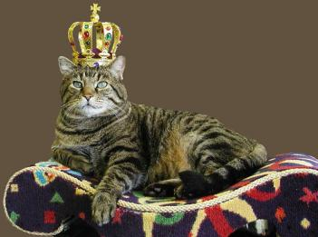

How to use
First, include the stylesheet at the top of your page.
<link rel="stylesheet" href="path/to/tippy.min.css">For the simplest case, add the property data-tippy to an element with your tooltip text as the value. You can do this to links, spans, divs, and even buttons. (Well, in most browsers. We'll get to that.)
<button data-tippy="I am a tooltip!">...</button>
<a href="http://www.google.com" data-tippy="Link to Google">...</a>
<span data-tippy="Hello world">...</span>
<div data-tippy="Full width element">...</div>Hover me
Real Elements
Span tag
Paragraph tag
Tooltip positions
By default, tooltips appear below the element to which they belong. By including the data-tippy-pos property, you can control how they appear. There are four potential values: "up", "down", "left", and "right".
<button data-tippy="I am a tooltip!" data-tippy-pos="up">
<button data-tippy="I am a tooltip!" data-tippy-pos="down">
<button data-tippy="I am a tooltip!" data-tippy-pos="left">
<button data-tippy="I am a tooltip!" data-tippy-pos="right">Hover me Hover me Hover me Hover me
Sizes
By default, tooltips are set at a size of 14px. Use the data-tippy-size attribute to specify larger or smaller font sizes. Acceptable values are:
- tiny
- small
- large
- jumbo
<button data-tippy="Tiny tooltip" data-tippy-size="tiny">Hover me!</button> <button data-tippy="Small tooltip" data-tippy-size="small">Hover me!</button> <button data-tippy="Large tooltip" data-tippy-size="large">Hover me!</button> <button data-tippy="Jumbo tooltip" data-tippy-size="jumbo">Hover me!</button>
Showing Tooltips Manually
If you want a tooltip to always be visible, use the data-tippy-visible attribute. Keep in mind that the tooltip is absolutely positioned, so it will overlap other elements on the page without its parent having extra margin or padding.
<button data-tippy="Always-on tooltip" data-tippy-visible>Hover not necessary!</button>
Special animations
The tooltips don't have much by way of default animation. They fade in, but that's it. There are two optional animation types, however. Include the data-tippy-animate property and one of two values, "slide" or "bubble".
Slide:
Hover me Hover me Hover me Hover me
Bubble:
Hover me Hover me Hover me Hover me
Browser support
Tippy.css has been tested in Internet Explorer 9-11 and the latest versions of Chrome, Firefox, Edge, Safari, Vivaldi, and Opera.
Known issues
-
Tooltips are created by using the
::beforeand::afterpseudo-elements, so tooltips on any element that doesn't have those, like images or input fields, won't appear.You can work around this by wrapping the element in a span or a div, though, like this:
<div data-tippy="Super awesome picture"> <img src="cats-rule.jpg"> </div>

If your stylesheet is using pseudo-elements on certain elements, you will run into conflicts. This will result in weird behavior or non-working tooltips.
HTML inside tooltips will not work, so don't even try.
Tooltips don't work on
<button>elements in Internet Explorer. I don't know why. :/The bubble animation uses the
clip-pathproperty, and (as of this writing) only works in Chrome, Vivaldi, and Safari.Tooltips on links that underline on hover get underlined in Edge.
Tooltips on buttons get included in the focus outline, like so:
You can override this behavior with this code:
button[data-tippy]:focus { outline: none; }I won't include this code in the stylesheet, however. Removing the button's outline will remove its accessibility, so think carefully before you implement this.
Learn more at www.outlinenone.com.
License
Tippy.css has been released under the MIT license.